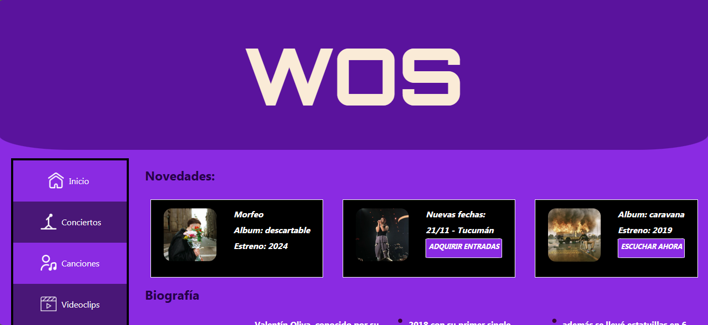

Mi Portfolio | Proyectos Realizados
FRONTEND
HTML5 Y CSS3
JAVASCRIPT
BACKEND
PHP
MYSQL
FRONTEND
Vista en vivo

Vista en vivo
Vista en vivo
BACKEND
Vista en vivo no disponible
Vista en vivo no disponible